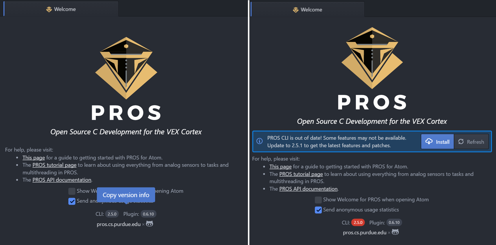
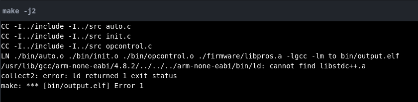

Known Issues¶
If you’re running into issues, the first thing you should do is check
whether you are running the very latest version of PROS. To do so with
Atom, you will need to open the PROS Welcome Page. If it’s not already
open, you can open it by toggling the Command Palette
(Ctrl + Shift + P or ⌘ + SHIFT + P) and
searching for the pros welcome page
With the PROS screen welcome, you can see what version you’re running. If you’ve kept the PROS plugin up to date, you will get a notification to upgrade PROS if there is an upgrade available
Failed to install platformio-ide-terminal¶
This issue may occur when installing PROS from within the Atom GUI. The
current cause of the issue is unknown. You can get the dependency
installed by manually installing platformio-ide-terminal by going to
settings (Ctrl + ,), click Install, then search for and
install platformio-ide-terminal. In some instances, restarting Atom
will allow the plugin to install.
Another workaround for this issue is to clone the platformio-atom-ide-terminal repository and set up a symlink using the Atom package manager:
git clone https://github.com/platformio/platformio-atom-ide-terminal.git
apm link <path to cloned repository>
Cannot find libstdc++.a¶
On Ubuntu 14.04 it is a known bug that libstdc++-arm-none-eabi-newlib package is missing from the repositories and fails to install with arm-none-eabi-gcc. This can lead to the following error when trying to compile your PROS project:
The easiest solution to this issue is to upgrade to 16.04 LTS.
Ghost COM ports¶
During normal operation of the serial COM ports on windows errors may occur when hardware is disconnected causing them to not close. This results in high COM port numbers (e.g. COM17). We recommend following these instructions to clean up any COM ports that are left in limbo.
Linux A-A Tethering¶
When utilizing PROS in your Linux environment you cannot interact with or flash your cortex via direct A-A Tethering to your computer. This is due to the fact that VEX does not provide Linux drivers for this feature that is readily available on Windows. However, this does not mean that you cannot interact with or flash your cortex. To do so you must utilize the programming hardware kit and a joystick connected as follows:
Diagram courtesy of VEX Robotics.
Both wired and wirless (VEXnet 1.0 & 2.0) are supported.
Terminal doesn’t show up!¶
After updating Atom to a new minor version, some packages (including
platformio-ide-terminal) will not work until they have been rebuilt
for the new Atom version. Symptoms include missing terminal buttons and
an inability to open the terminal manually using
PROS:Toggle-Terminal.
If these symptoms apply, check if there is a red bug icon in the right-hand corner of the bottom status bar. If so, click this icon, and you will be prompted to rebuild any broken packages. For more information, see this section of the Atom flight manual.